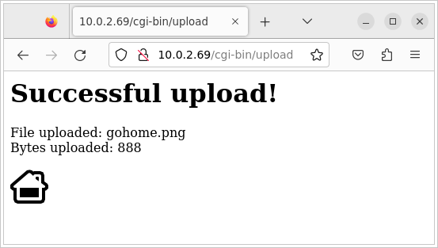
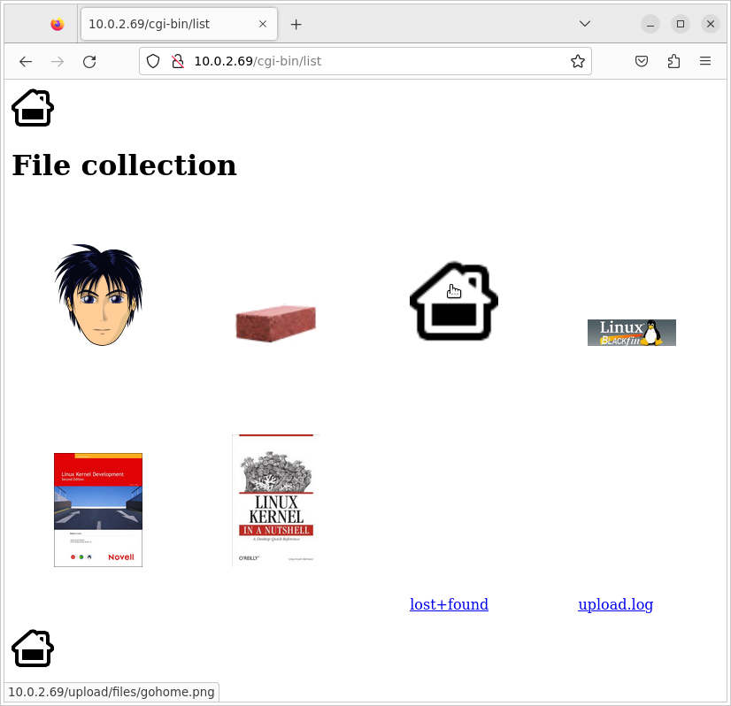

20. Block Filesystems
20.1 Objectives
-
Produce filesystem images.
-
Configure the kernel to use these filesystems.
-
Use the
tmpfsfilesystem to store temporary files. -
Load the kernel and DTB from a FAT partition.
After doing the BusyBox lab, we are going to copy the filesystem contents to the emulated SD card. The storage will be split into several partitions, and your QEMU emulated board will be booted from this SD card, without using NFS anymore.
20.2 Setup
Throughout this lab, we will continue to use the root filesystem we have created in the $HOME/embedded-linux-bbb-labs/tinysystem/nfsroot directory, which we will progressively adapt to use block filesystems.
20.3 Filesystem support in the kernel
Make sure that your kernel supports SquashFS (SQUASHFS) and ext4 (EXT4_FS).
Basic configuration options for these filesystems will be sufficient; no need for things like extended attributes.
$ cd "$LAB_PATH/../kernel/linux"
$ grep -r "\bCONFIG_SQUASHFS\b" .config
# CONFIG_SQUASHFS is not set
$ grep -r "\bCONFIG_EXT4_FS\b" .config
CONFIG_EXT4_FS=y
If necessary, recompile and update your kernel image on the TFTP server. We will only later copy the kernel to our FAT partition.
$ cp "$LAB_PATH/../hardware/kernel-leds.config" .config
$ make menuconfig
$ cp .config "$LAB_PATH/kernel-blockfs.config"
$ TC_NAME="arm-training-linux-uclibcgnueabihf"
$ TC_BASE="$HOME/x-tools/$TC_NAME"
$ export PATH="$TC_BASE/bin:$PATH"
$ export CROSS_COMPILE=arm-linux-
$ export MAKEFLAGS=-j$(nproc)
$ export ARCH=arm
$ make
$ cp arch/arm/boot/zImage /srv/tftp/zImage-with-blockfs
$ cp arch/arm/boot/zImage /srv/tftp/zImage
Boot your board on the NFS filesystem you used in this previous lab.
Now, check the contents of /proc/filesystems. You should see that ext4 and SquashFS are supported.
# cat /proc/filesystems
nodev sysfs
nodev tmpfs
nodev bdev
nodev proc
nodev cgroup
nodev cgroup2
nodev cpuset
nodev devtmpfs
nodev binfmt_misc
nodev configfs
nodev debugfs
nodev tracefs
nodev sockfs
nodev pipefs
nodev ramfs
nodev rpc_pipefs
nodev devpts
ext3
ext4
ext2
cramfs
squashfs
vfat
msdos
nodev nfs
nodev nfs4
nodev jffs2
nodev mqueue
nodev ubifs
You can now halt the board and disconnect, so that you can remove the SD card to be formatted.
20.4 Format the third partition
We are going to format the third partition of the SD card image with the EXT4 filesystem, so that it can contain uploaded images.
Plug the SD card again. With the bootloader tutorial we alredy created the partition, but now we're going to format it.
If using an USB SD card reader, remember to follow the instructions of the bootloader tutorial.
In my case, the device is/dev/sdd.
Mount this partition on a directory on your host (you could create the /mnt/www_upload_files directory, for example) and move the contents of the /www/upload/files directory (in your target root filesystem) into it.
The goal is to use the third partition of the SD card as the storage for the uploaded images.
Finally, unmount the partition.
$ mnt_path="/mnt/www_upload_files"
$ sudo mkdir -p $mnt_path
$ sudo mount -t ext4 "${SDCARD_DEVP}3" $mnt_path
$ cd "$LAB_PATH/nfsroot/www/upload/files/"
$ sudo cp -rv $(ls) $mnt_path
'adult-small.png' -> '/mnt/www_upload_files/adult-small.png'
'brick.png' -> '/mnt/www_upload_files/brick.png'
'linux-blackfin.jpg' -> '/mnt/www_upload_files/linux-blackfin.jpg'
'linux-kernel-dev-book.jpg' -> '/mnt/www_upload_files/linux-kernel-dev-book.jpg'
'lkn-small.jpg' -> '/mnt/www_upload_files/lkn-small.jpg'
$ sudo umount $mnt_path
$ sudo rmdir $mnt_path
Now, restart the board with the updated SD card, and from the Linux command line mount this third partition on /www/upload/files.
# ls /www/upload/files/
adult-small.png linux-kernel-dev-book.jpg
brick.png lkn-small.jpg
linux-blackfin.jpg
# rm -rf /www/upload/files/*
# mount -t ext4 /dev/mmcblk0p3 /www/upload/files/
EXT4-fs (mmcblk0p3): mounted filesystem with ordered data mode. Opts: (null). Quota mode: disabled.
# ls /www/upload/files/
adult-small.png linux-kernel-dev-book.jpg
brick.png lkn-small.jpg
linux-blackfin.jpg lost+found
Once this works, modify the startup scripts in your root filesystem to do it automatically at boot time.
$ cd "$LAB_PATH/nfsroot/"
$ cat > etc/init.d/rcS <<'EOF'
#!/bin/sh
mount -t proc proc /proc
mount -t sysfs sys /sys
mount -t ext4 /dev/mmcblk0p3 /www/upload/files/
/usr/sbin/httpd -h /www/
modprobe snd-usb-audio
EOF
Reboot your target system again. With the mount command, check that /www/upload/files is now a mount point for the third SD card partition.
Also make sure that you can still upload new images, and that these images are listed in the
web interface.
For example, upload the file $LAB_PATH/nfsroot/www/gohome.png.
# reboot
...
# mount
192.168.0.15:/srv/nfs on / type nfs (rw,relatime,vers=3,rsize=4096,wsize=4096,namlen=255,hard,nolock,proto=tcp,timeo=600,retrans=2,sec=sys,mountaddr=192.168.0.15,mountvers=3,mountproto=tcp,local_lock=all,addr=192.168.0.15)
devtmpfs on /dev type devtmpfs (rw,relatime,size=242424k,nr_inodes=60606,mode=755)
proc on /proc type proc (rw,relatime)
sys on /sys type sysfs (rw,relatime)
/dev/mmcblk0p3 on /www/upload/files type ext4 (rw,relatime)
# echo "Upload gohome.png from the web interface, please!"
...
# ls /www/upload/files/
adult-small.png linux-kernel-dev-book.jpg
brick.png lkn-small.jpg
gohome.png lost+found
linux-blackfin.jpg upload.log
The pictures below are from the QEMU variant of this course.


20.5 Adding a tmpfs partition for log files
Currently, the upload script was storing its log file in /www/upload/files/upload.log.
To avoid seeing this log file in the directory containing uploaded files, let's store it into /var/log instead.
Add the /var/log/ directory to your root filesystem, and modify the startup script to mount a tmpfs filesystem to this directory.
You can test your tmpfs mount command line on the system before adding it to the startup script, in order to be sure that it works properly. Note that for types of tmpfs and sysfs the device name is just ignored, so we can just name them after the type.
$ cd "$LAB_PATH/nfsroot/"
$ mkdir -p var/log/
$ cat > etc/init.d/rcS <<'EOF'
#!/bin/sh
mount -t proc proc /proc
mount -t sysfs sysfs /sys
mount -t tmpfs tmpfs /var/log/
mount -t ext4 /dev/mmcblk0p3 /www/upload/files/
/usr/sbin/httpd -h /www/
modprobe snd-usb-audio
EOF
Modify the www/cgi-bin/upload.cfg configuration file to store the log file in /var/log/upload.log.
You will lose your log file each time you reboot your system, but that's OK in our system.
That's what tmpfs is for: temporary data that you don't need to keep across system reboots.
$ nano www/cgi-bin/upload.cfg
$ cat www/cgi-bin/upload.cfg
Config = Default
Root = /www/upload/files
FileMask = *
IgnoreSubdirs = YES
Overwrite = YES
LogFile = /var/log/upload.log
OkPage = /www/upload/OkPage.html
BadPage = /www/upload/BadPage.html
Debug = 0
Reboot your system and check that it works as expected, by uploading gohome.png again.
# reboot
...
# mount
192.168.0.15:/srv/nfs on / type nfs (rw,relatime,vers=3,rsize=4096,wsize=4096,namlen=255,hard,nolock,proto=tcp,timeo=600,retrans=2,sec=sys,mountaddr=192.168.0.15,mountvers=3,mountproto=tcp,local_lock=all,addr=192.168.0.15)
devtmpfs on /dev type devtmpfs (rw,relatime,size=242424k,nr_inodes=60606,mode=755)
proc on /proc type proc (rw,relatime)
sysfs on /sys type sysfs (rw,relatime)
tmpfs on /var/log type tmpfs (rw,relatime)
/dev/mmcblk0p3 on /www/upload/files type ext4 (rw,relatime)
# rm -v /www/upload/files/gohome.png
removed '/www/upload/files/gohome.png'
# echo "Upload gohome.png from the web interface, please!"
...
# ls /www/upload/files/
adult-small.png linux-kernel-dev-book.jpg
brick.png lkn-small.jpg
gohome.png lost+found
linux-blackfin.jpg upload.log
# cat /var/log/upload.log
Thu Jan 1 00:00:45 1970 File uploaded succesfully: gohome.png (888 bytes)
# reboot
...
# cat /var/log/upload.log
cat: can't open '/var/log/upload.log': No such file or directory
You can now halt and disconnect.
20.6 Making a SquashFS image
We are going to store the root filesystem in a SquashFS filesystem in the second partition of the SD card.
In order to create SquashFS images on your host, you need to install the squashfs-tools package.
Then, create a SquashFS image of your NFS root directory with mksquashfs.
Plug the SD card again. Using the dd command, copy the filesystem image to the second partition (named image) in the SD card image. Finally, unmount and cleanup.
$ sudo partprobe
$ sudo umount ${SDCARD_DEVP}*
$ sudo mkfs.ext4 -L image "${SDCARD_DEVP}2"
...
$ sudo dd if="$LAB_PATH/nfsroot.sqsh" of="${SDCARD_DEVP}2"
50168+0 records in
50168+0 records out
25686016 bytes (26 MB, 24 MiB) copied, 71.6355 s, 359 kB/s
20.7 Booting on the SquashFS partition
In the U-boot shell, configure the kernel command line to use the second partition of the SD card as the root file system.
Also add the rootwait boot argument, to wait for the SD card to be properly initialized before trying to mount the root filesystem.
Since the SD cards are detected asynchronously by the kernel, the kernel might try to mount the root filesystem too early without rootwait.
Check that your system still works. Congratulations if it does!
...
Hit any key to stop autoboot: 0
=> setenv bootargs_mmcblk0p2 "console=ttyS0,115200n8 root=/dev/mmcblk0p2 rootwait ip=${ipaddr}::${serverip}:${netmask}::${netif}"
=> setenv bootargs $bootargs_mmcblk0p2
=> saveenv
=> reset
...
VFS: Mounted root (squashfs filesystem) readonly on device 179:2.
...
Please press Enter to activate this console.
Now halt and disconnect.
20.8 Store the kernel image and DTB on the SD card
We have to edit the SD card again, to mount the FAT partition (the first one) in the SD card image, for example on /mnt/sd_boot. It should contain only the latest saved U-Boot environment.
Then, copy the kernel image and DTB to it.
FInally, unmount the FAT partition and release the loop device.
$ sudo partprobe
$ sudo umount ${SDCARD_DEVP}*
$ mnt_path="/mnt/sd_boot"
$ sudo mkdir -p $mnt_path
$ sudo mount -t vfat "${SDCARD_DEVP}1" $mnt_path
$ ls /mnt/sd_boot/
MLO uboot.env uboot.img
$ sudo cp /srv/tftp/zImage /srv/tftp/am335x-boneblack-custom.dtb $mnt_path
$ ls /mnt/sd_boot/
am335x-boneblack-custom.dtb MLO uboot.env u-boot.img zImage
$ sudo umount $mnt_path
$ sudo rmdir $mnt_path
You now need to adjust the bootcmd of U-Boot so that it loads kernel and from the SD card, instead of loading them from the network via TFTP.
In U-boot, you can load a file from a FAT filesystem using the fatload command, which expects: the device, the partition, the load address, and the source filename.
Compare the previous and the new bootcmd. Finally, reset to reboot the board and make sure that your system still boots fine.
...
Hit any key to stop autoboot: 0
=> printenv bootcmd
bootcmd=tftp 0x81000000 zImage; tftp 0x82000000 am335x-boneblack-custom.dtb; bootz 0x81000000 - 0x82000000
=> setenv bootcmd_mmcblk0p1 "fatload mmc 0:1 0x81000000 zImage; fatload mmc 0:1 0x82000000 am335x-boneblack-custom.dtb; bootz 0x81000000 - 0x82000000"
=> setenv bootcmd $bootcmd_mmcblk0p1
=> saveenv
=> reset
...
4869856 bytes read in 320 ms (14.5 MiB/s)
67275 bytes read in 7 ms (9.2 MiB/s)
Kernel image @ 0x81000000 [ 0x000000 - 0x4a4ee0 ]
## Flattened Device Tree blob at 82000000
Booting using the fdt blob at 0x82000000
Loading Device Tree to 8ffec000, end 8ffff6ca ... OK
Starting kernel ...
...
Please press Enter to activate this console.
You can now halt and disconnect.
Now, the whole system (bootloader, kernel and filesystems) is stored on the SD card. That's very useful for product demos, for examples. You can switch demos by switching SD cards, and the system depends on nothing else. In particular, no networking is necessary.
20.9 Backup
$ cd "$LAB_PATH/nfsroot/"
$ find . -depth -print0 | cpio -ocv0 | xz > "$LAB_PATH/nfsroot-fatload.cpio.xz"
$ cd $LAB_PATH
$ tar cfJv "$LAB_PATH/nfsroot.sqsh.tar.xz" nfsroot.sqsh
$ cd /srv/tftp/
$ tar cfJv "$LAB_PATH/blockfs-tftp.tar.xz" zImage am335x-boneblack-custom.dtb
20.10 Licensing
This document is an extension to: Embedded Linux System Development - Practical Labs - BeagleBone Black Variant
— © 2004-2023, Bootlin https://bootlin.com/, CC-BY-SA-3.0 license.